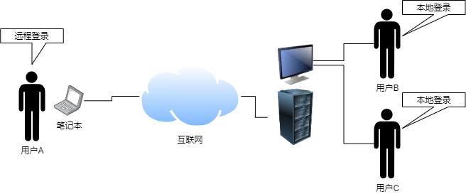
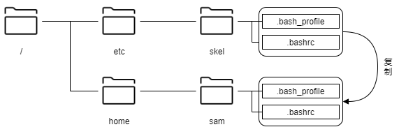

第四章 管理用户¶
4.1 注册、修改和删除用户¶
什么是用户¶
Linux 允许多个用户使用同一台主机。如前面的运行示例所示，本文档中的用户都是登录到同一主机并进行操作。登录可以是直接登录到主机的本地登录，也可以是通过网络的远程登录。但是，这两种登录都必须先创建一个可以登录到此主机的用户。
另外，如果登录的用户能够执行所有操作，则有可能会破坏系统。因此，第三章所述的权限限制对文件和目录的访问权限进行了限制，同时也限制了可执行程序的执行权限。
用户注册¶
要注册新用户，请使用 useradd 命令。此命令对普通用户不可用，必须以 root 用户身份运行。
可以在 /etc/passwd 和 /etc/shadow 文件中创建条目（用户信息）和起始目录。此外，由于用户必须属于一个或多个组，因此组信息将会写入 /etc/group 和 /etc/shadow 文件。稍后将做更详细的介绍。
useradd [选项] 用户名
选项 |
说明 |
|---|---|
-c 注释 |
指定注释 |
-d 起始目录 |
指定起始目录 |
-e 失效日期 |
指定账户到期日期。失效日期以 YYYY-MM-DD（年-月-日）格式指定，例如：2019-12-03 |
-f 天数 |
账户密码过期指定天数后将其设置为无效状态 |
-g gid（组ID） |
指定主组 |
-G gid（组ID） |
指定辅助组 |
-k skel目录路径 |
指定skel目录路径 |
-m |
创建起始目录（如果在 |
-M |
不创建起始目录 |
-s shell的路径 |
指定登录shell |
-u uid（用户ID） |
指定用户ID |
-D |
显示或设置默认值 |
以下是一个CentOS示例：如果在不使用选项的情况下运行useradd命令，则会基于缺省值创建一个用户。缺省值使用 /etc/default/useradd 文件中的设置。
# cat /etc/default/useradd
# useradd defaults file
GROUP=100
HOME=/home
INACTIVE=-1
EXPIRE=
SHELL=/bin/bash
SKEL=/etc/skel
CREATE_MAIL_SPOOL=yes
项目 |
说明 |
|---|---|
GROUP |
GROUP中指定的数字取决于 |
HOME |
在HOME值指定的目录下创建用户名称目录，并将其作为用户初始目录 |
INACTIVE |
密码到期后账户不在可用的天数。“-1”表示为无限期。 |
EXPIRE |
账户到期日期，没有则意味着无限期。 |
SHELL |
登录shell |
SKEL |
新用户起始目录模板。在新用户的起始目录中复制 |
CREATE_MAIL_SPOOL |
在 |
一下是创建普通用户 “sam” 的示例：
# useradd sam
# ls -d /home/sam
/home/sam ⬅ 在 /home 目录下创建了 sam 目录
如上面的示例结果所示，在执行 useradd 命令时未指定“-m”选项，但会创建初始目录。因为在 /etc/login.defs 文件中设置了 “CREATE_HOME yes”。因此，使用 useradd 命令创建用户时， /etc/skel 目录下的文件和目录会自动分发到用户的起始目录。
例如，系统管理员可以使用 bash 配置文件“.bash_profile”或“.bashrc”向用户分发配置文件。用户可以自定义这些文件。
注解
除了 useradd 命令外，还提供了 adduser 命令来创建用户。注意，CentOS 和 Ubuntu 的行为不同。
CentOS：链接到 useradd Ubuntu：使用与 useradd 命令不同的交互方式添加用户
useradd 命令将用户 sam 信息添加到 /etc/passwd 和 /etc/shadow 文件中。以下示例使用 tail 命令检车每个文件末尾的附加信息。
# tail -1 /etc/passwd
sam:x:1001:1001::/home/sam:/bin/bash
# tail -1 /etc/shadow
sam:!!:17725:0:99999:7:::
/etc/passwd 中添加了一个由七个字段组成的行，这些字段有六个“:”分割。如果在创建新用户后未设置口令，则 /etc/shadow 中的第二个字段为“!!”，反之则此字段设置为加密后的口令相应的值。
注解
有关 /etc/shadow 文件中字段的详细信息，请参见本章节“4-3 锁定账户并管理到期日期”。
设置密码¶
使用 passwd 命令设置密码。root用户可以在 passwd 命令的参数中设置和更改任何指定的用户的登录口令。普通用户只能使用 passwd 命令更改自己的口令。因此，普通用户使用 passwd 命令时不必指定用户。
passwd [选项] [用户名称]
选项 |
说明 |
|---|---|
-d |
密码过期：为过期的用户设置需要在下次登录前设置密码 |
-e |
删除密码。仅限root用户 |
-i 天数 |
指定密码到期和失效之间的天数。仅限root用户 |
-l |
锁定用户账户。仅限root用户 |
-n 天数 |
设置密码之前的最少天数。仅限root用户 |
-u |
解锁用户账户。仅限root用户 |
-w 天数 |
指定密码到期前的警告天数。仅限root用户 |
-x 天数 |
指定密码更改的最大天数。仅限root用户 |
如果没有指定选项，则以交互方式进行设置密码：
$ passwd sam
Changing password for sam.
Enter new UNIX password:
Retype new UNIX password:
# tail -1 /etc/passwd
sam:x:1001:1001:,,,:/home/sam:/bin/bash
# tail -1 /etc/shadow
sam:$6$SVzR22hq$calpTTiki.EnylxwWH9TNjhHj8awJPx4nVWJ5lpwjws.akX/jT7.pJWxPXV3V0FwrB2woR4NgRCykDwGNSsyY.:18317:0:99999:7:::
/etc/passwd 中条目内容保持不变。但是，/etc/shadow 中的第二个字段从“!!”无密码已变为加密密码。
注解
请注意，用户身份验证是由可加载身份认证模块（PAM）中的 pam_unix.so 模块执行的。
注解
有关PAM的详细信息，请参见第十章。
删除用户账户¶
要删除用户账户，请使用 userdel 命令。
userdel [选项] 用户名称
您可以通过在userdel命令中指定“-r”或“–remove”选项来删除用户的起始目录（及目录下的文件）。如果未指定“-r”或“–remove”选项，则只删除 /etc/passwd 和 /etc/shadow 文件中的条目，而起始目录则会保存。
4.2 注册、删除和修改组¶
什么是组¶
用户必须至少属于一个组。有两种类型的组：主组和辅助组。用户必须分配一个主组，辅助组则是可选的。
用户可以使用groups命令查看他们所属的组。通过在参数中指定用户名，可以查看用户所属的组。groups命令引用 /etc/groups 文件。
注解
有关 groups 命令的详细信息，请参见第三章。
以下是用户 yuko 和 sam 所属的组的 groups 命令的示例：
# groups sam
sam : sam
# groups yuko
yuko : yuko users
$ grep yuko /etc/passwd
yuko:x:1002:1002:,,,:/home/yuko:/bin/bash
# grep yuko /etc/group
users:x:100:yuko,ryo
yuko:x:1002:
创建组¶
要注册新组，请使用 groupadd 命令。此命令必须具有 root 权限才能运行。
groupadd [-g 组ID] 组名称
以下是root创建“pg”组的示例：
# groupadd pg
# tail -1 /etc/group
pg:x:1006:
# tail -1 /etc/gshadow
pg:!::
/etc/gshadow 是一个文件，用于设置用户为加入其未注册的组而运行newgrp命令时的口令。
删除组¶
要删除组，请使用groupdel命令，此命令必须具有root权限才能运行。groupdel命令的参数必须是组名。
groupdel 组名称
以下是root删除“pg”组的示例：
# groupdel pg
# tail /etc/group | grep pg
# tail /etc/gshadow | grep pg
变更所属组¶
更改用户的主组时，请使用 usermod 命令的 “-g” 选项。如果要将用户加入多个组（辅助组），请使用 useradd 命令的“-G”选项和 usermod 命令的“-G”选项。
# id sam ⬅ ①
uid=1001(sam) gid=1001(sam) groups=1001(sam) ⬅ ②
# grep users /etc/groups ⬅ ③
users:x:100:yuko,ryo ⬅ ④
# usermod -G users sam ⬅ ⑤
# id sam
uid=1001(sam) gid=1001(sam) groups=1001(sam),100(users) ⬅ ⑥
# grep users /etc/group ⬅ ⑦
users:x:100:yuko,ryo,sam ⬅ ⑧
① 显示用户 sam 信息
② 属于 sam(GID为1001) 作为主组
③ 显示用户组信息
④ ryo 和 yuko 属于 users 组
⑤ 用户 sam 作为辅助组加入 users
⑥ users 被添加到辅助组
⑦ 显示用户组信息
⑧ 添加了用户 sam
如果要更改组的用户已属于辅助组，则“-G”选项将替换为指定的组。如果要将多个组作为辅助组，请使用“-aG”选项。
# id sam ⬅ ①
uid=1001(sam) gid=1001(sam) groups=1001(sam),100(users)
# usermod -G wheel sam
# id sam
uid=1001(sam) gid=1001(sam) groups=1001(sam),10(wheel)
# usermod -aG users sam
# id sam
uid=1001(sam) gid=1001(sam) groups=1001(sam),10(wheel),100(users)
① 显示用户 sam 信息
② 辅助组为users
③ 在“-G”选项中作为辅助组加入“wheel”
④ 辅助组由users替换为wheel
⑤ 使用“-aG”选项将users添加为辅助组
⑥ 作为辅助组加入 wheel 和 users